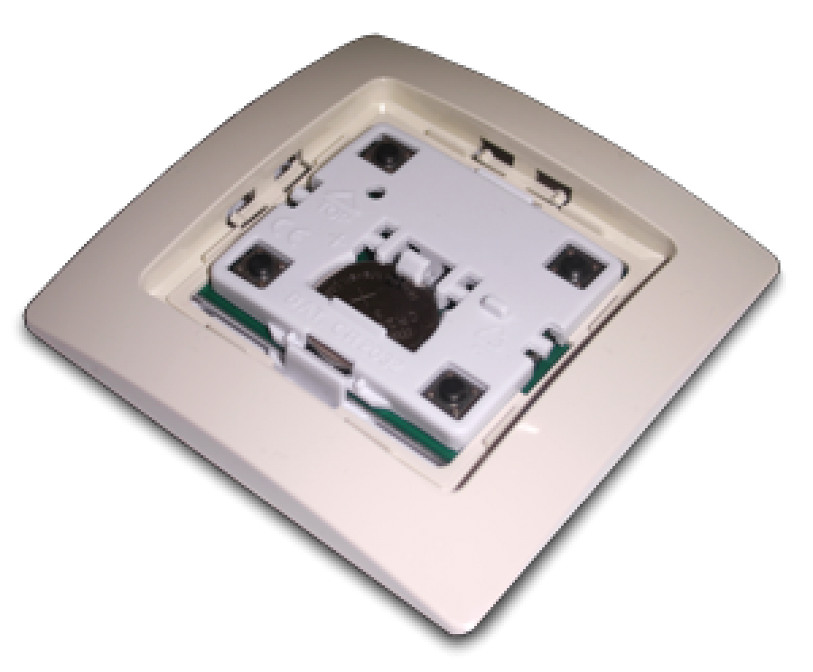
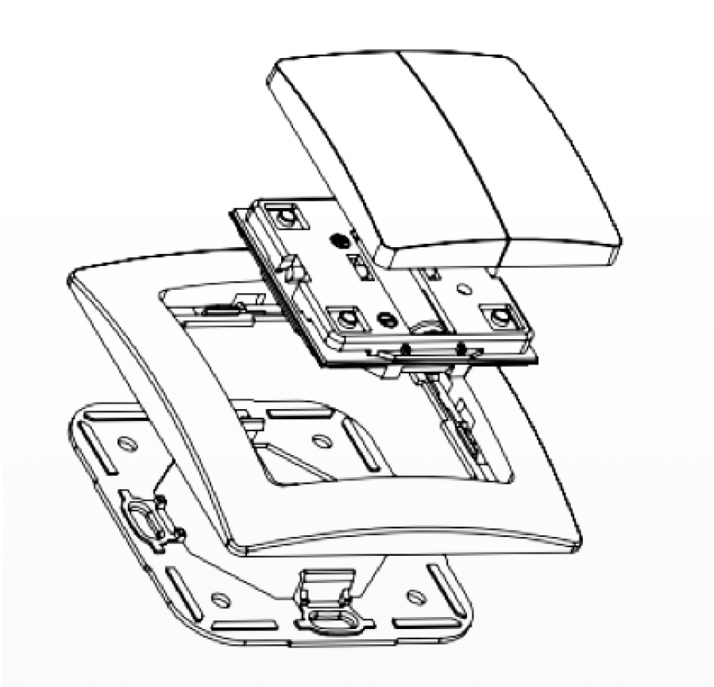
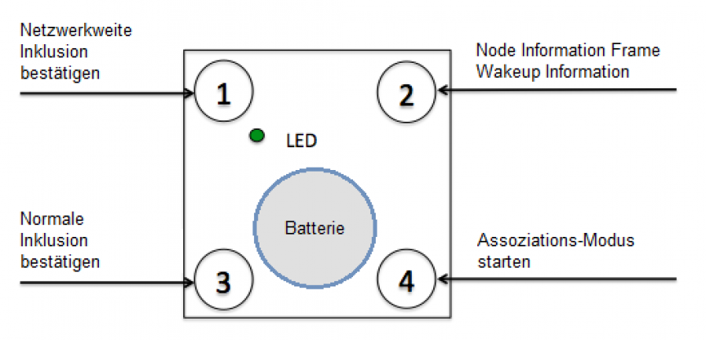
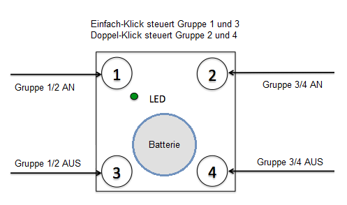
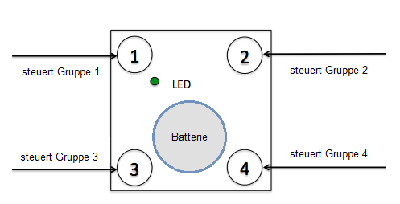
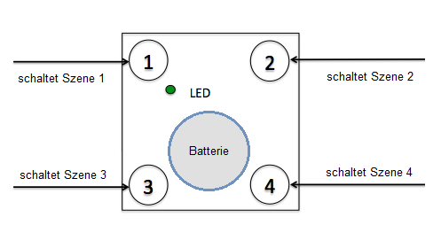

ZME_WCD5
Firmware Version : 1.2 |
 |
KurzinfoS Dieses Gerät ist ein Funksensor. Der Wall Controller arbeitet in 2 Betriebsarten, dem Standardmodus oder dem Managementmodus (langsames Blinken der grünen LED). Das Drücken aller vier Tasten für 5 Sekunden aktiviert den Managementmodus. Dieser endet automatisch nach 10 Sekunden, wenn kein Befehl ausgewählt wurde. Taste 3 bestätigt die Standard-Inklusion und Exklusion, Taste 2 sendet einen 'Node Information Frame' bzw. eine 'Wakeup Notification', Taste 1 bestätigt die netzweite Inklusion. Im Auslieferungszustand ist das Gerät nicht inkludiert und jeder Tastendruck erzeugt einen Fehlercode (rote LED blinkt auf). Weitergehende Informationen finden sich in den jeweiligen Abschnitten dieses Handbuches. |
Produktbeschreibung
Mit dem Z-Wave.Me Funkwandschalter können sowohl Z-Wave Geräte direkt gesteuert werden, als auch in einem IP Gateway unterschiedliche Szenen aktiviert werden. Der Funkwandschalter steuert zwar Geräte direkt, kann aber nicht als Z-Wave Controller eigene Netze verwalten, sondern benötigt immer einen zusätzlichen Controller für die Inklusion und Exklusion. Das Gerät kann in verschiedenen Betriebsmodi arbeiten, die durch Konfigurationsparameter bestimmt werden:
- Steuerung von Gruppen von anderen Z-Wave-Geräte mit "ON", "OFF" und Dimm-Befehlen.
- Steuerung von Geräten in der Nähe des FOB mit "ALL ON" oder "All Off"-Befehlen.
- Aktivierung von vordefinierten Szenen in Gateways oder anderen Z-Wave-Geräten.
Installationsanleitung
Das Gerät wird mit eingebauter Batterie betriebsfähig ausgeliefert. In diesem Auslieferzustand erzeugt ein einfacher Druck auf eine der Tasten - da in kein Netz inkludiert und damit nicht fähig, eine Nachricht zu senden - einen Fehlercode (Blinken der roten LED). Auf diese Weise kann die Betriebsbereitschaft des Gerätes getestet werden.

Das Gerät kann auf jeder trockenen und ebenen Oberfläche, entweder mit Schrauben oder doppelseitigem Klebeband montiert werden. Zuerst wird die Grundplatte an der Wand befestigt. In einem nächsten Schritt wird der Schaltereinsatz am Rahmen befestigt. Der Elektronikeinsatz wird verwendet, um den Rahmen, wie in der Abbildung zu sehen, an der Grundplatte zu fixieren. Schließlich werden die Schalterwippen auf den Elektronikeinsatz montiert.
Für einen Batteriewechsel müssen die Schalterwippen entfernt werden. Die CR-Batterie kann durch Drücken der kleinen Verriegelungsnase oberhalb der Batterie ersetzt werden.
Das Gerät unterscheidet zwei Betriebsmodi: Standard- und Managementmodus:
- Standardmodus: In diesem Modus kann der Funkwandschalter andere Geräte steuern oder Szenen aktivieren.
- Managementmodus: Das Gerät wird in den Managementmode geschaltet, indem alle vier Tasten für mindestens 5 Sekunden gemeinsam gedrückt gehalten werden. Eine langsam blinkende grüne LED bestätigt den Managementmodus. Im Managementmodus haben die Tasten andere Funktionen. Ohne weitere Tastenbedienung kehrt das Gerät nach 10 Sekunden in den Standardmodus zurück. Jede Bedienung beendet den Managementmodus ebenfalls.
Im Managementmodus können folgende Aktionen durchgeführt werden:

- Taste 1 - Netzwerkweite Inklusion: Das Gerät kann in ein Z-Wave-Netzwerk von jedem beliebigen Ort im Netzwerk aufgenommen werden. Dies erfordert einen primären Controller, welcher Explorer Frames unterstützt. Dieser Modus dauert 20 Sekunden und stoppt automatisch. Jeder Tastendruck stoppt den Modus ebenfalls.
- Taste 2 - Sendet Node Information Frame und Wakeup Mitteilungen (siehe Erläuterung in den weiteren Kapiteln).
- Taste 3 – Standard Inklusions-/Exklusions-Modus: Das Gerät wird von einem Controller direkter Funkreichweite inkludiert oder exkludiert. Jeder Tastendruck stoppt den Modus. Eine Exklusion des Gerätes von einem Netzwerk setzt das Gerät in den Auslieferungszustand zurück.
- Taste 4 – Assoziationen setzen: Um Zielgeräte einer der 4 Assoziationsgruppen zuzuordnen (siehe Kapitel Assoziationsgruppen im Handbuch).
Verhalten des Gerätes im Z-Wave Netz
I Im Auslieferungszustand ist das Gerät mit keinem Z-Wave-Netz verbunden. Damit es mit anderen Z-Wave Geräten kommunizieren kann, muss es in ein bestehendes Z-Wave Netz eingebunden werden. Dieser Prozess wird bei Z-Wave Inklusion genannt. Geräte können Netzwerke auch wieder verlassen. Dieser Prozess heißt bei Z-Wave Exklusion. Beide Prozesse werden von einem Controller gestartet, der dazu in einen Inklusion- bzw. Exklusion-Modus geschaltet werden muss. Das Handbuch des Controllers enthält Informationen, wie er in diese Modi zu schalten ist. Erst wenn der Controller des Z-Wave Netzes im Inclusion-Modus ist, können Geräte hinzugefügt werden. Das Verlassen des Netzes durch Exklusion führt zum Rücksetzen dieses Gerätes in den Auslieferungszustand.
Bringen Sie Ihren Z-Wave Controller in den Inklusions-Modus. Bringen Sie den Funkwandschalter in den Managementmodus und drücken Sie Taste 3. Das Gerät wird durch das Drücken der Taste 3 im Managementmodus lokal inkludiert bzw. exkludiert. Um das Gerät netzwerkweit zu inkludieren bzw. zu exkludieren, muss im Managementmodus die Taste 1 gedrückt werden.
Bedienung des Gerätes
In Abhängigkeit vom eingestellten Modus und der weiteren Konfiguration kann das Gerät verschieden eingesetzt werden.
Standardmodus:
Steuern einer Gruppe mit 2 Tasten (Das ist die Standardeinstellung) Eine Gruppe (Nr. 1) von Geräten wird mit Taste 1 und 3 gesteuert, die andere Gruppe (Nr. 2) wird mit Taste 2 und 4 gesteuert. Taste 1 und 2 schalten die Aktoren "AN", Taste 3 und 4 schalten die Aktoren "AUS". Wenn Doppelklicken in den Einstellungsparametern #1 oder #2 aktiviert ist, können die Gruppen 3 und 4 durch kurzes Doppelklicken gesteuert werden.
Dimmen von Geräten wird durch das lange Halten der Tasten (Hoch-Dimmen mit Tasten 1 und 2, Herunter-Dimmen mit Taste 3 und 4) bzw. kurzes Klicken und Halten für die Gruppen mit Doppelklick ermöglicht.

Steuern einer Gruppe mit einer Taste In diesem Modus werden die Gruppen durch jeweils eine Taste gesteuert. Ein Tastendruck schaltet "AN", ein Doppelklick schaltet "AUS". Hoch-Dimmen von Geräten wird durch das lange Halten der Taste und Herunter-Dimmen durch kurzes Klicken und Halten der Taste realisiert. Die Gruppennummer entspricht dabei der Tastennummer.

Steuerungs-Kommandos:
Die Konfigurationsparameter #11 bis #14 regeln, welche Kommandos gesendet werden, wenn die einzelnen Tasten gedrückt werden.
Direkte Steuerung von Geräten erfolgt durch "AN", "AUS", "HOCH-DIMMEN" und "HERUNTER-DIMMEN". Die speziellen Kommandos "ALLES AN" und "ALLES AUS" senden einen Sammelruf an alle Geräte in direkter Funkreichweite. Die Geräte reagieren entsprechend ihrer Einstellungen zum Kommando "Alles Schalten". Dieser Modus beinhaltet die Kommunikationseinstellung 7.
Einfache Szenensteuerung durch konfigurierbare Szenen-Kommandos. Geräte in Assoziationsgruppen werden mit der Z-Wave Kommandoklasse "Scene Controller Configuration" individuell konfiguriert. Eine Szene kann über eine Assoziationsgruppe konfiguriert werden. Wie auf der Abbildung zu erkennen, ist die Nummer der Szene standardmäßig gleich der Nummer der Assoziationsgruppe. Dieser Modus wird standardmäßig immer genutzt, um Szenen in IP-Gateways zu aktivieren, kann aber auch genutzt werden, um vordefinierte Szenen in anderen Geräten zu aktivieren.

Erweiterte Szenensteuerung:
In diesem Modus kann jeder Tastendruck ein Szenen-Kommando mit einer eingestellten Nummer auslösen. Die Szenen-Nummer ist eine Kombination aus Gruppen-Nummer und der für den Tastendruck definierten Aktion. Sie ist immer zweistellig. Die Gruppen-Nummer bestimmt die erste Ziffer, die Aktion die bestimmt die zweite Ziffer. Die folgenden Aktionen sind möglich:
- 1 = An
- 2 = Aus
- 3 = Hoch-Dimmen Start
- 4 = Herunter-Dimmen Start
- 5 = Hoch-Dimmen Stop
- 6 = Herunter-Dimmen Stop
Beispiel: Klick/ Doppelklick der Taste 1 sendet ein Aktivierungssignal für Szene 11 (Einfachklick Anschalten) und Szene 12 (Doppelklick Ausschalten, Steuern einer Gruppe mit einer Taste ist eingestellt). Dieser Modus beinhaltet die Kommunikationseinstellung 6.
Kinderschutz
Das Gerät verfügt über einen Kinderschutzmechanismus. Dabei wird die lokale Bedienung über Tasten gesperrt und es ist nur noch eine Bedoenung über Funk möglich.
Das Gerät kann in einen Kindersicherung-Modus gestellt werden. In diesem Modus ist keine lokale Steuerung mehr möglich. Der Kindersicherungs-Modus kann ausschließlich per Funk aktiviert werden. Lediglich im Schutz-Modus mit Eingabe ist es möglich, den Schutz nach Drücken einer beiebigen Taste für 5 Sekunden auszuschalten. Der Schutz wird nach 5 Sekunden wieder aktiviert.
Kommunikation mit einem batteriebetriebenen Gerät
W Das Gerät ist batteriegespeist und damit in der Regel in einem Tiefschlafmodus um Strom zu sparen. Im Tiefschlafmodus kann das Gerät keine Funksignale empfangen. Daher wird ein (statischer) Controller benötigt, der netzgespeist und damit immer funkaktiv ist. Dieser Controller - zum Beispiel ein IP-Gateway - verwaltet eine Nachrichten-Mailbox für dieses batteriegespeiste Gerät, in dem Nachrichten an dieses Gerät zwischengespeichert werden. Ohne einen solchen statischen Controller wird die Nutzung dieses batteriebetriebenen Gerätes sehr schnell zur Entladung der Batterie führen oder die Nutzung ist komplett unmöglich.
Dieses Gerät weckt regelmäßig auf, meldet dies durch Aussenden einer sogenannten Wakeup-Notifikation und leert dann seine Mailbox im statischen Controller. Dafür muss bei der Inclusion die Node-ID des Controllers und ein Aufweckinterval definiert werden. Erfolgt die Inklusion durch einen statischen Controller wie zum Beispiel ein IP-Gateway, wird dieser Controller diese Konfiguration automatisch erledigen und in der Regel eine Nutzerschnittstelle anbieten, um das Aufweckinterval den Nutzerbedürfnissen anzupassen. Das Aufweckinterval ist ein Kompromiss zwischen maximaler Batterielaufzeit und minimaler Reaktionszeit des batteriegespeisten Gerätes.
Direkt nach der Inklusion bleibt das Gerät ca. 2.5 Sekunden wach, damit ein Controller Konfigurationsaufgaben durchführen kann. Danach kann das Gerät immer manuell aufgeweckt werden. Dazu wird der Managementmodus aktiviert (alle vier Tasten 5 Sekunden gedrückt halten) und danach Taste 2 drücken.
Das minimale Aufweckinterval beträgt 240s. Es ist jedoch sehr empfehlenswert, ein längeres Aufweckinterval zu wählen, um die Batterie zu schonen. Wird als Zielgerät für die Wakeup-Notifikation die Geräte-ID 0 gewählt, ist der regelmäßige Aufweckvorgang unterdrückt.
Es ist möglich die Gerätenummer 255 als Zielgerät für die Wakeup-Notifikation anzugeben. In diesem Falle wird die Nachricht als Broadcast an alle Geräte mit direkter Funkverbindung gesendet. Dem Vorteil der sofortigen Benachrichtigung steht als Nachteil gegenüber, das das Gerät gegebenenfalls mehr Zeit im aktiven Modus und damit mehr Batterieladekapazität verbraucht.
Node Information Frame
NIF Der Node Information Frame ist die Visitenkarte eines Z-Wave Gerätes. Es ist ein spezielles Datenpaket, in dem der Gerätetyp sowie die Funktionen des Gerätes bekanntgemacht werden. Inklusion und Exklusion eines Gerätes wird von diesem mit einem Node Information Frame beantwortet. Zusätzlich kann der Node Information Frame für bestimmte Konfigurationsprozesse des Z-Wave Netzes - zum Beispiel das Setzen von Assoziationen - benötigt werden.
Aktivieren des Managementmodus (alle vier Tasten 5 Sekunden gedrückt halten) und danach Drücken der Taste 2 sendet einen Node Information Frame aus.
Bedeutung der LED-Signale
- Bestätigung - Grün 2 Sekunden
- Fehler - Rot 2 Sekunden
- Bestätigung jedes Tastendrucks - Grün 1/4 Sekunden
- Warten auf Auswahl des Netzwerk-Modus - Grün blinkt
- Warten auf Auswahl der Gruppe im Assoziations-Modus - Grün blinkt schnell
- Warten auf Node Information Frame im Assoziations-Modus - Grün-Rot - ohne Blinken
Assoziationen - wie werden andere Geräte gesteuert?
A Z-Wave Geräte können andere Geräte direkt steuern. Diese direkte Steuerung heißt in Z-Wave Assoziation. In den steuernden Geräten muss dazu die Geräte-ID des zu steuernden Gerätes hinterlegt werden. Dies erfolgt in sogenannten Assoziationsgruppen. Eine Assoziationsgruppe ist immer an ein Ereignis im steuernden Gerät gebunden (Tastendruck oder Auslösen eines Sensors). Bei Eintritt dieses Ereignisses wird an alle in einer Assoziationsgruppe hinterlegten Geräte ein Steuerkommando gesendet.
Assoziationsgruppen:
| 1 | Wird gesteuert durch Taste 1 oder einfache Klicks auf Taste 1 und 3 (max. Anzahl Geräte: 8) |
| 2 | Wird gesteuert durch Taste 3 oder einfache Klicks auf Taste 1 und 3 (max. Anzahl Geräte: 8) |
| 3 | Wird gesteuert durch Taste 2 oder einfache Klicks auf Taste 2 und 4 (max. Anzahl Geräte: 8) |
| 4 | Wird gesteuert durch Taste 4 oder einfache Klicks auf Taste 2 und 4 (max. Anzahl Geräte: 8) |
Setzen und Löschen von Assoziationsbeziehungen
SA Assoziationen können entweder per Funkkommando oder direkt am Gerät gesetzt werden.
Assoziationen können über Z-Wave Kommandos oder direkt mit dem Gerät gesetzt oder entfernt werden. Um ein Z-Wave Gerät mit dem Funkwandschalter steuern zu können, muss die Node ID des Gerätes mit einer der vier Assoziationsgruppen des Funkwandschalter verbunden werden. Das ist ein dreistufiger Prozess:
- Bringen Sie den Funkwandschalter in den Managementmodus und drücken sie innerhalb von 10 Sekunden die Taste 4. (Die LED blinkt grün, wenn der Managementmodus aktiviert ist).
- Drücken Sie erneut innerhalb von 10 Sekunden die Z-Wave Taste an dem zu assoziierenden Gerät. Nach weiteren 10 Sekunden geht das Gerät wieder in den Schlafmodus. Mit einem Einfach-Klick fügen Sie das Gerät der entsprechenden Assoziationgruppe hinzu. Mit einem Doppel-Klick entfernen Sie das in Schritt 3 gewählte Gerät aus der Assoziationsgruppe.
- Wählen Sie das Gerät, welches Sie mit dem Funkwandschalter bedienen möchten und lösen Sie innerhalb von 20 Sekunden durch Drücken der Z-Wave Taste das Senden eines Node Information Frame aus. In der Regel wird das durch einmaliges oder dreimaliges Drücken der Z-Wave Taste erreicht. Bitte informieren Sie sich über die Bedienung Ihres zu assziierenden Gerätes in dessen Bedienungsanleitung. Jeder Tastendruck am Funkwandschalter in dieser Phase beendet den Prozess.
Konfigurationseinstellungen
Z-Wave Produkte können direkt nach der Inklusion im Netz verwendet werden. Durch Konfigurationseinstellungen kann das Verhalten des Gerätes jedoch noch besser an die Anforderungen der Anwendung angepasst und zusätzliche Funktionen aktiviert werden.
WICHTIG: Manche Steuerungen erlauben nur die Konfiguration von vorzeichenbehafteten Werten zwischen -128 und 127. Um erforderliche Werte zwischen 128 und 255 zu programmieren, muss der gewünschte Wert minus 256 eingegeben werden. Beispiel: um einen Parameter auf einen Wert von 200 zu setzen, müsste der Wert 200-256 = -56 eingegeben werden, wenn nur positive Werte bis 128 akzeptiert werden. Bei Werten von 2 Byte Länge wird die gleiche Logik angewandt: Werte über 32768 werden als negative Werte angegeben
| Wert | Beschreibung |
|---|---|
| 0 | Taste 1 und 3 sind unabängig |
| 1 | Taste 1 und 3 steuern gemeinsam, Doppelklick wird nicht beachtet (Voreingestellt) |
| 2 | Taste 1 und 3 steuern gemeinsam, Doppelklick wird beachtet |
| Wert | Beschreibung |
|---|---|
| 0 | Taste 2 und 4 sind unhängig |
| 1 | Taste 2 und 4 steuern gemeinsam, Doppelklick wird nicht beachtet (Voreingestellt) |
| 2 | Taste 2 und 4 steuern gemeinsam, Doppelklick wird beachtet |
| Wert | Beschreibung |
|---|---|
| 0 | Deaktiviert |
| 1 | Schaltkommandos Ein und Aus mittels 'Basic' und 'SwitchMultilevel' Kommando (Voreingestellt) |
| 2 | Schaltkommandos Ein und Aus mittels 'Basic' Kommando |
| 3 | 'Switch All" Kommando |
| 4 | Szenenaktivierung |
| 5 | Vorkonfigurierte Szenen werden gesendet. |
| Wert | Beschreibung |
|---|---|
| 0 | Deaktiviert |
| 1 | Schaltkommandos Ein und Aus mittels 'Basic' und 'SwitchMultilevel' Kommando (Voreingestellt) |
| 2 | Schaltkommandos Ein und Aus mittels 'Basic' Kommando |
| 3 | 'Switch All" Kommando |
| 4 | Szenenaktivierung |
| 5 | Vorkonfigurierte Szenen werden gesendet. |
| Wert | Beschreibung |
|---|---|
| 0 | Deaktiviert |
| 1 | Schaltkommandos Ein und Aus mittels 'Basic' und 'SwitchMultilevel' Kommando (Voreingestellt) |
| 2 | Schaltkommandos Ein und Aus mittels 'Basic' Kommando |
| 3 | 'Switch All" Kommando |
| 4 | Szenenaktivierung |
| 5 | Vorkonfigurierte Szenen werden gesendet. |
| Wert | Beschreibung |
|---|---|
| 0 | Deaktiviert |
| 1 | Schaltkommandos Ein und Aus mittels 'Basic' und 'SwitchMultilevel' Kommando (Voreingestellt) |
| 2 | Schaltkommandos Ein und Aus mittels 'Basic' Kommando |
| 3 | 'Switch All" Kommando |
| 4 | Szenenaktivierung |
| 5 | Vorkonfigurierte Szenen werden gesendet. |
| Wert | Beschreibung |
|---|---|
| 1 — 100 | in 10ms Schritten (Voreingestellt 50) |
| Wert | Beschreibung |
|---|---|
| 1 | Nur bei alle Ausschalten (Voreingestellt) |
| 2 | Nur bei alle Einschalten |
| 255 | Alle Einschalten und Ausschalten |
| Wert | Beschreibung |
|---|---|
| 0 | Nein (Voreingestellt) |
| 1 | Ja |
| Wert | Beschreibung |
|---|---|
| 0 | Deaktiviert |
| 1 | Bestätige Druck auf Taste |
| 2 | Bestätige Druck auf Taste und Funkkomunikation (Voreingestellt) |
| Wert | Beschreibung |
|---|---|
| 0 | Nein (Voreingestellt) |
| 1 | An das gleiche Gerät wie die Aufweck-Meldung |
| 2 | Broadcast an alle Nachbarn |
Technische Daten
| Schutzklasse | IP 20 |
| Batterietyp | 1 * CR2032 |
| Z-Wave Frequenz | 868.42 MHz (SRD Band) |
| Funkreichweite | bis 100 m im Freien, durchschnittlich bis 20 m in Gebäuden |
| Explorer Frames | Ja |
| SDK | 4.54 pl1 |
| Geräteart | Slave with routing capabilities |
| Allgemeiner Z-Wave-Gerätetyp | Remote Switch |
| Spezieller Z-Wave-Gerätetyp | Multilevel Remote Switch |
| Router | Nein |
| FLiRS | Nein |
| Firmware Version | 1.2 |